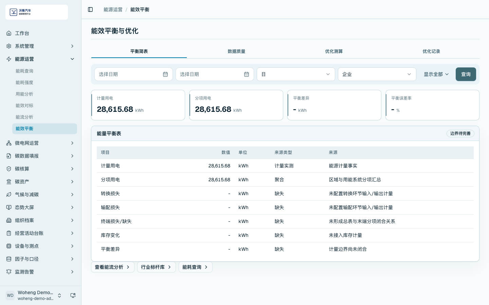

能源管理
能源管理模块用于从采集数据和经营数据中形成能耗查询、能源强度、用能分析、能效对标、能流分析、能效平衡和预算管理。
能耗查询
进入 /energy/consumption，按时间、区域、能源品种或设备筛选能耗记录。页面应显示记录数、能源品种和明细数据。

能源消费量和强度
进入 /energy/intensity，查看综合能耗、能源品种汇总和强度指标。演示时可说明强度指标需要匹配合适的分母，例如产量、产值、面积或业务量。

用能分析
进入 /energy/analysis，查看总用电量、用能系统构成和趋势变化。

能效对标
进入 /energy/benchmark，切换到设备或工序对标，查看对标对象、指标和结果。

能流和平衡
进入 /energy/flow，查看计量用电、分项用电和关键链路贡献。进入 /energy/balance，查看能量平衡表、来源类型和优化分析结果。


能碳预算
进入 /energy/budget，查看年度目标、月度预算和执行情况。